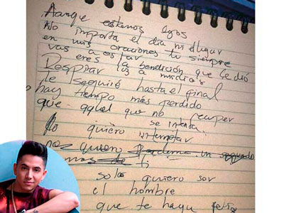
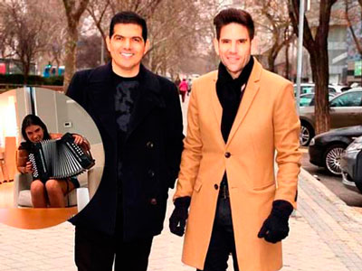
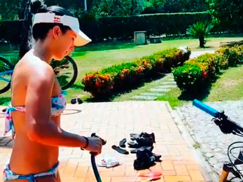
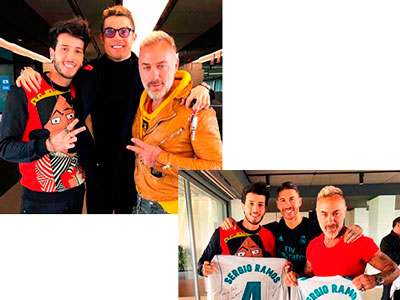
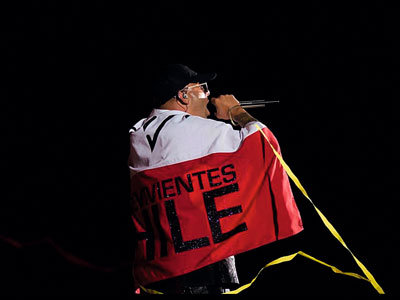
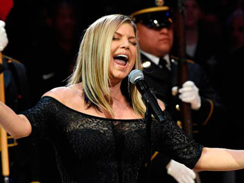

Chismes

¡NO PODEMOS CALLAR!
Así es como titula su nuevo tema Arelys Henao “La Reina de la Música Popular”, un poderoso mensaje para las mujeres que son o han sido maltratadas física o psicológicamente, esta canción es una protesta al maltrato hacia la mujer y una manera de crear conciencia sobre un fenómeno que crece día a día.
¡MÁS COMPROMETIDO NO PUEDE ESTAR!
Jessi Uribe, nos contó que está casado hace 10 años con el amor de su vida, de ese amor nacieron cuatro hijos a los cuales ama y valora fuertemente, su familia es la principal motivación. Su más reciente colaboración musical es con Francy “La Voz Popular de América”, para quien escribió el tema -Déjalo libre- una historia real, ¡su historia!, cuando conoció a su esposa ella tenía pareja y el hizo esta canción para pedirle a aquel hombre que la dejara libre.
NUEVOS PROYECTOS
La que se encuentra trabajando en un nuevo personaje para un proyecto mexicano es la carismática y talentosa actriz Aida Morales, nos reveló el nombre de la producción, El Rey del Valle, estamos seguros que será un excelente papel como todos los que la actriz ha encarnado.
MUCHA QUÍMICA
Alan Ramírez “El Galán de la Música Popular” estrenó su más reciente sencillo -Enfermo de amorcon un videoclip donde se le ve muy bien acompañado por la venezolana Mariana Grilli, con quien al parecer el feeling va más allá de la pantalla, hubo sonrisas e intercambio de números telefónicos, esperamos el amor llegue a la puerta de este talentoso artista.
¡REGRESA!
Después de varios años, el actor Óscar Rodo regresa a la televisión nacional para hacer parte del elenco de “La Ley Secreta”, allí interpretará a Manolo, el esposo celoso de una de las protagonistas. Esta serie la veremos en el segundo semestre del año.
MARIELLE ESTA ENAMORADA
Con su nuevo sencillo -Desde que llegaste a mi- un tema lleno de amor y sentimiento nos confesó que está enamorada, pero de la música, con este segundo álbum titulado Marielle “Pal Mundo”. Esta hermosa dominicana está decidida a cruzar fronteras con su trabajo.
LA COMBINACIÓN PERFECTA
Herencia de Timbiquí está en este momento en proceso creativo para grabar un nuevo tema, hace pocos días estuvieron en estudio junto a Silvestre Dangond iniciando con la maqueta de este proyecto, una combinación que estamos seguro tendrá gratas sorpresas para los seguidores.
PREPARA UN “BOOM”
El artista puertorriqueño Kenai visitó La Tienda de mi Barrio y como buen cliente nos contó que próximamente estará lanzando su nuevo éxito titulado “Boom Boom”, una canción en la que también participarán Nacho y Justin Quiles.
¡LE LANZARON UNA BOTELLA!
Durante un concierto en Atlántico, Oscar Prince tuvo que retirarse del escenario pues fue golpeado por una “botella con el pico partido que lanzaron de entre el público” afirmó su manager. ¡Afortunadamente Prince tiene muy buenos reflejos y el hecho no pasó a mayores!
¡LE SACARON LA PIEDRA A LA GORDA FABIOLA!
Juan Valencia, hijo de la humorista se encontraba listo para salir a rumbear, pero no lo dejaron entrar al bar, el joven iba con tenis y la respuesta del lugar es que se reservaron el derecho de admisión. Indignada la Gorda Fabiola dejó un mensaje en sus redes sociales.
UNA BODA COMO “EL PRESIDENTE” SE MERECE
Mr. Black se casa por la iglesia, la boda se llevará a cabo en la iglesia Santo Domingo de Cartagena, sus padrinos serán Diva Jessurum y Poncho Zuleta y como era de esperarse, la fiesta durará tres días iniciará en el teatro Adolfo Mejía y finalizará con un paseo por las islas del Rosario ¡Definitivamente botarán la casa por la ventana!
¿FARINA ACTUARÁ EN RBD?
Con una imagen y un mensaje lleno de agradecimiento la cantante dio la noticia a seguidores, en la publicación se le ve a la artista con el productor, director, guionista y mentor de RBD, Pedro Damián, quien también será el encargado de esta secuela de la serie que cautivó a muchos hace unos años.

LE PILLAMOS UNA NOTA DE AMOR A ANDY RIVERA
Una hoja con varios rayones y un mensaje bastante romántico tuvo confundidos a sus seguidores, pues no era seguro si sería una nueva composición del cantante o sí mejor sería una nota inspirada en alguien en especial. ¡La publicación fue eliminada horas más tarde!
¡LA HIJA DE TATÁN MEJÍA YA MANEJA MOTO!
La pequeña publicó un video en su nuevo Instagram donde ella, sin ayuda de nadie maneja moto como toda una experta, mientras su papá la graba y le dice que hacer para mejorar en su práctica de motocross.
LA MUJER QUE LE BAILÓ A SILVESTRE
En un concierto en Ecuador una sexy mujer se subió a la tarima donde estaba el cantante para bailar junto a él. Con el fin de deslumbrar a Silvestre, la mujer empezó a bailar más sexy de lo permitido por lo que el cantante de vallenato la detuvo y solicitó que la retiraran de la tarima.

¿PETER LE ESTA BUSCANDO REEMPLAZO A JUANCHO DE LA ESPRIELLA?
Con un video en Instagram Peter mostró lo orgulloso que se siente de su esposa la “Tata” Becerra, pues toca muy bien el acordeón, los mensajes alabando su talento y belleza son pocos comparándolos con los mensajes en los que sus seguidores etiquetan a Juancho con el fin de “preocuparlo”.

MARIANA PAJÓN OFRECE SERVICIOS DE LIMPIEZA
Los servicios de la reina del BMX se ofrecieron en redes sociales, con un video lavando su bicicleta, lo que más ha llamado la atención es el peculiar uniforme que usa la deportista pues ha cautivado a más de un seguidor, mira aquí su vestuario.
¡YEISON JIMÉNEZ EN ROPA INTERIOR!
En una de sus últimas publicaciones el artista se encargó de complacer a su público femenino. Yeison publicó una fotografía a blanco y negro bastante sexy, donde posa en bóxer mientras disfruta una bonita vista. Vea aquí la fotografía.
SOLTERA Y A LA ORDEN
Luego de siete años de relación y tres de matrimonio, Jennifer Aniston hizo oficial su separación de Justin Theroux. ¿Quién será su próxima pareja? Recordemos que la reconocida actriz fue también esposa de la estrella de cine Brad Pitt.
¿CELOSO?
Al parecer la colaboración musical entre Selena Gómez y Maluma no fue posible porque Justin Bieber estaría celoso de la relación entre su novia y el cantante paisa ¿Se sentirá amenazado? ¡Tranquilo Justin! No tienes nada que envidiarle.

¿QUÉ TAL EL COMBO?
Sergio Ramos invitó a Sebatián Yatra a uno de los entrenamientos del Real Madrid, allí por supuesto tuvo la oportunidad de conocer a Cristiano Ronaldo, el infaltable Gian Lucca Vacchi también estuvo presente.
¡78 PRIMAVERAS!
En medio de mucho amor y risas Vicente Fernández celebró su cumpleaños al lado de su familia. No hay duda alguna que #ChenteSigueSiendoElRey

¡AVERGONZADO!
El reconocido cantante de reggaetón Wisin tuvo que disculparse públicamente por los malos tratos que tuvo su equipo de seguridad con los presentadores de un concierto en Chile. ¡Sus trabajadores fueron despedidos!

¿LO CANTO MAL?
Fergi ex vocalista de Black Eyed Peas fue criticada por su interpretación poco convencional por no decir sensual versión del Himno Nacional de los Estados Unidos en el juego de las estrellas de la NBA, obligada por las criticas pidió disculpas. “Claramente no salió como esperábamos” aseguró la cantante.